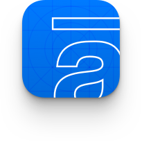

Projeto I: Appkraft — A arte de fazer apps (2014–2017) 
Como fazer o mesmo app nativo para iOS e Android para suportar 4 marcas de e-commerce diferentes Nesse eu falo de UX e UI de como é desenhar para plataformas diferentes e ser referência nas duas. Como expressar marcas na UI visualmente sem impactar nos princípios. Nesse eu falo de UX e UI de como é desenhar para plataformas diferentes e ser referência nas duas.

Rapid Prototyping
I prefer starting out with low-fidelity prototypes before jumping into visuals. That way I'd reduce my bias and focus on making navigation easy to understand. I used Apple Keynote to iterate through the prototyping process. The good thing about this tool is that you can make prototypes look less like a wireframe. Sometimes it's hard for users and stakeholders to know what to do if the mockup doesn't look like something they're used to.